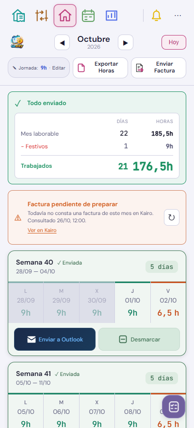
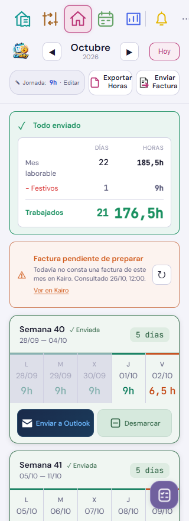

Resultado en móvil




Preparado en la rama de trabajo, con datos ficticios. La primera línea muestra la base laborable del mes. Las siguientes descuentan festivos, vacaciones y ausencias. La última conserva juntos los días trabajados y las horas, destacadas.
El panel se mantiene arriba también cuando faltan semanas por enviar. Si hay horas personalizadas, una línea de ajuste conserva la igualdad entre base, descuentos y resultado. El aviso incluye las semanas del mes y las dos siguientes, sin repetir la semana puente.


Se probará primero una sesión privada de Outlook web en Chromium alojado en Kairo. Todavía no hay ningún envío automatizado activo.
Pendiente de validar con la sesión real: lectura de las programaciones creadas desde Android, identificación por semana y detección de cambios. Después se implementarán el botón de programación, el orden entre semanas, la actualización confirmada y la conciliación del envío individual.
La fecha objetivo está definida como el último día trabajado de lunes a viernes a las 08:00 de Madrid. Las fechas vencidas y las semanas sin días trabajados se dejan pendientes para decidir.